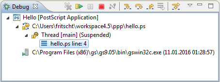

The cursor jumps to the procedure and selects this token.
The Debug View is part of the Debug Perspective. It allows you to manage the debugging or running of a program in the workbench. It displays the stack frame for the suspended threads for each target you are debugging. Each thread in your program appears as a node in the tree. It displays the process for each target you are running.
If the thread is suspended, its stack frames are shown as child elements.
Because PostScript is a single-threaded language, you see only one thread. And because PostScript has an execution-model very different from other languages (like Java or C/C++), their concept of stack frames doesn't really fit here, and hence you see only one stack frame. However, you can inspect the stacks in the Variables View.
| Command | Shortcut | Name | Description |
|---|---|---|---|
| F8 | Resume | Resumes a suspended thread. | |
| F5 | Step Into | Steps into the highlighted token. | |
| F6 | Step Over | Steps over the highlighted token. Execution will continue at
the next token either in the same procedure or (if you are at the
end of a procedure) it will continue in the procedure from which the
current procedure was called. The cursor jumps to the procedure and selects this token. |
|
| F7 | Step Return | Steps out of the current procedure. This option stops execution after exiting the current procedure. | |
| Ctrl F2 | Terminate | Terminates the selected debug target. |